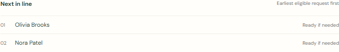
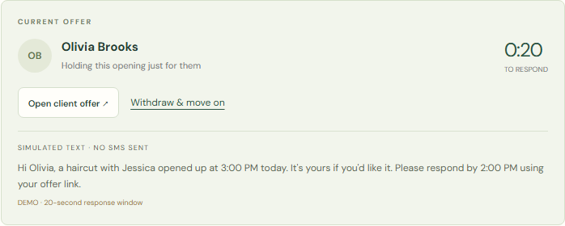
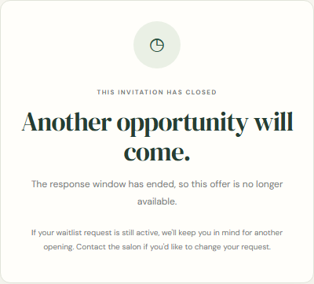
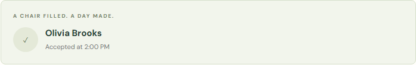
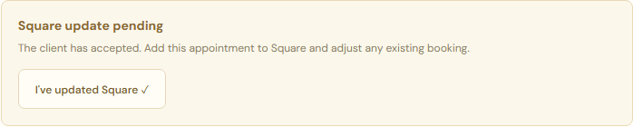
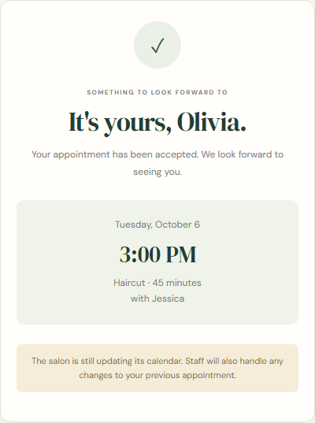

Ready to try
- Matching and one offer at a time.
- Automatic timeouts and progression.
- Phone-friendly accept / decline and closed expired links.
- A shared history and Square update reminder.
Your calendar. A little less chasing.
Keep your appointments in Square.
Let Juniper manage who gets the next offer—and what happens after that.
Let’s walk through one opening
45 minutes become available.
You check and reserve the time in Square.
01 · The first invitation
Your staff view · Maya’s offer is active

02 · Maya does not respond
No staff click is needed to move the opening to the next eligible client.
20 seconds later · the same opening, a new offer

The offer moved. The explanation stayed.
You can return to the page and see who has the opening and why.
Your history records both steps
Maya’s old link now shows a closed invitation

03 · Olivia says yes
Outreach stops, Olivia’s request leaves the waitlist, and the remaining staff action is visible.
Your staff view · accepted, with a Square reminder


Olivia’s phone view

Try it together, then decide
A 30-minute walkthrough with you and Carla, using fictional clients.
Add real messaging, staff sign-in, and hosting first. Then track openings filled, booking conflicts, and staff follow-up time.
Pilot target: at least 50% of cancellations refilled with less checking. These are goals to measure, not results claimed from the demo.